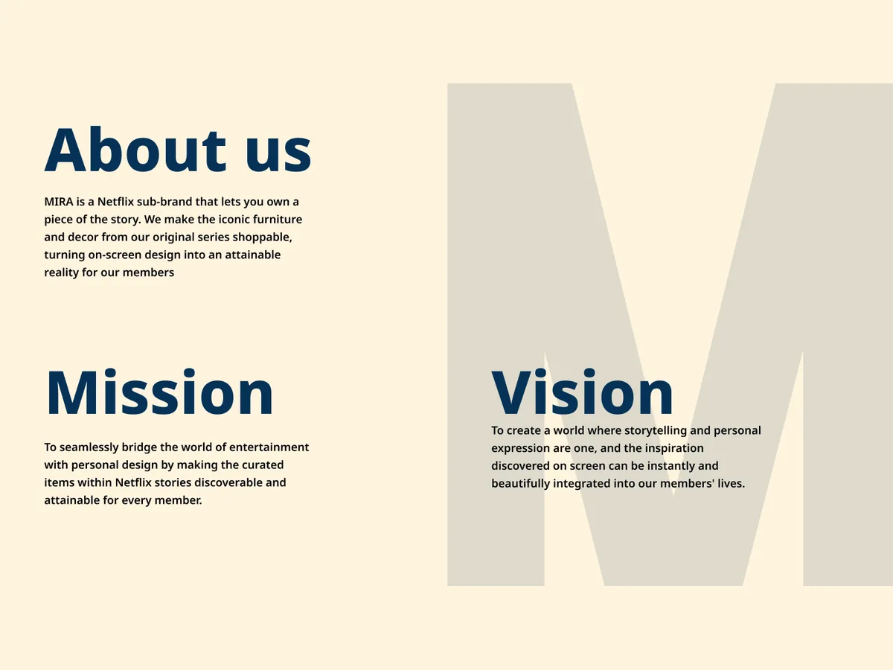
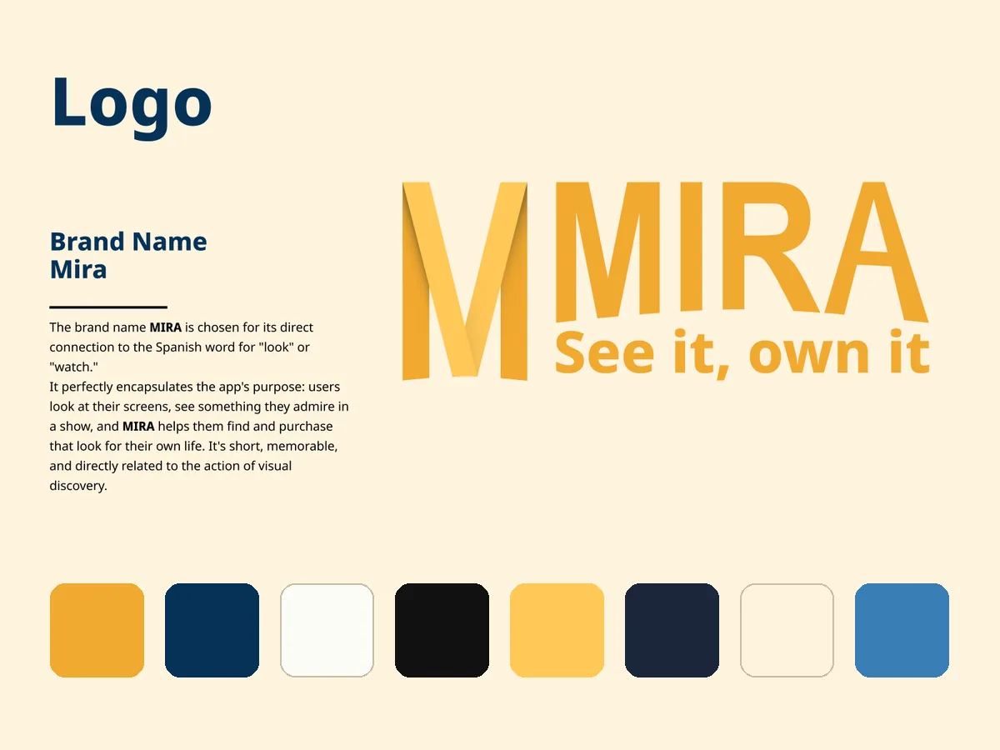
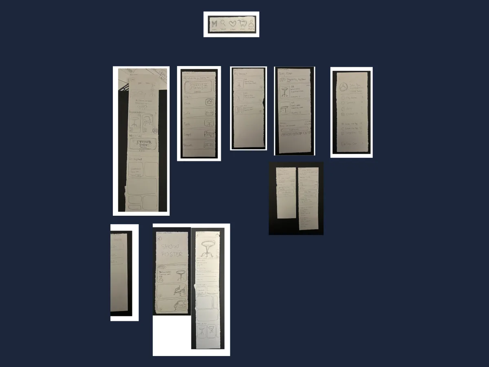
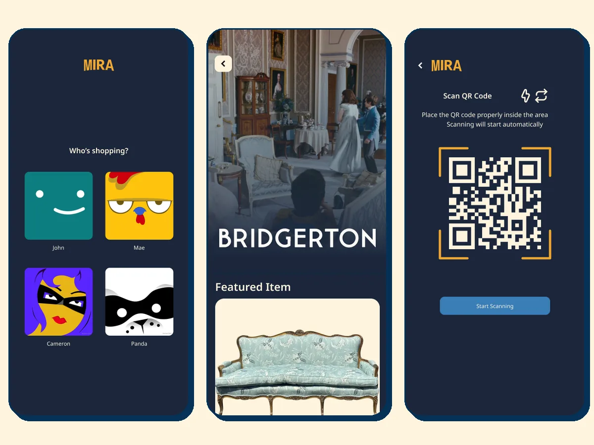
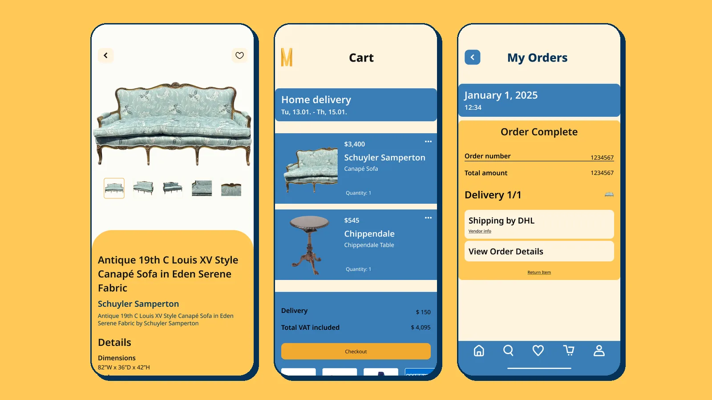

UI/UX · App design · Branding · 2025
MIRA
A concept Netflix sub-brand that lets you shop the furniture and decor you see in your favourite series. See it, own it.
- Role
- Research, branding & UI/UX design
- Tools
- Figma, paper sketches
- Duration
- 3 months
- Team
- Solo · School Project
01 Problem
Netflix viewers juggle more and more streaming subscriptions, so Netflix needs reasons to be the one people keep. At the same time, people fall in love with the rooms in their favourite shows, from Bridgerton's sofas to Sex Education's living room, but have no easy way to find those pieces. How might we turn that "I want that" moment into something you can actually own?
02 Process
-

Research & concept
I studied Netflix's brand, annual report and socials, turned the problems I found into How Might We questions, and landed on MIRA: a sub-brand that makes the furniture from Netflix originals shoppable.
-

Name & identity
MIRA is Spanish for "look". I built a folded-ribbon M logo, a Mira Blue and Gold palette that feels trustworthy and a little luxurious, and chose Noto Sans for its likeness to Netflix Sans.
-

Paper sketches
I sketched every screen on paper and went through four rounds of feedback: recommendations replaced best-sellers, a "Get inspired" section was added, the profile moved into the bottom bar and the home icon became the logo.
-

High-fidelity UI
The final screens borrow familiar Netflix patterns, like profiles and show pages, so members feel at home, then add QR sign-in and a page per series listing every piece you can buy from it.
03 Outcome
A clickable Figma prototype of the full flow: pick a show, open a piece, see it in the scenes it appears in ("Get the look"), add it to your cart and check out. [Add one or two sentences: what you learned and what you would improve next time.]

MIRA is a student concept and is not affiliated with Netflix. Netflix, the series titles and the stills shown belong to their owners.